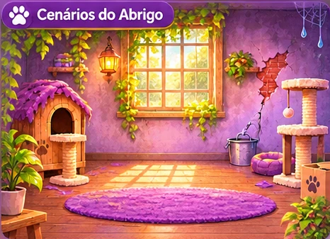

CENA 01 · ABERTURAA casa da janela azul
Plano geral da casa abandonada na Vila dos Ipês. A câmera se aproxima lentamente da janela azul, revelando pétalas e poeira iluminada pelo sol.
Ainda falta gerar o vídeo.
Imagem de referência aprovada; abertura cinematográfica planejada.
Imagem de referência aprovada; abertura cinematográfica planejada.